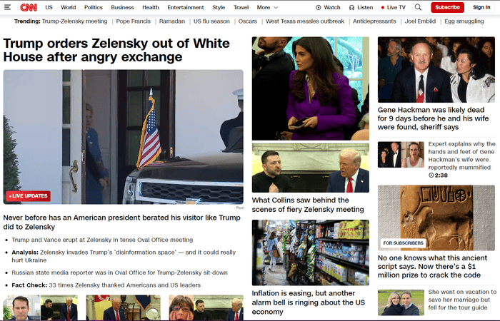

This site is dedicated to explaining the CRAP principles of website design and comparing and contrasting two websites.
Crap Principles stands for:
Source: Attention In Sight
The CNN website violates a couple of the CRAP principles. It specifically, repitition, alignment, and proximity. As you can see in the image, the articles are about completely different topics with only two of them being similiar. While the topics might be new or current they are all over the place in tone and importance causing a sense of discord. For alignment, the website has margins but each column is a different place and size while the nav bars at the top have completely different margins. As for proximity, the articles are all clustered together giving a sense clautrophobia and the amount of next next to each other is overwhelming.
